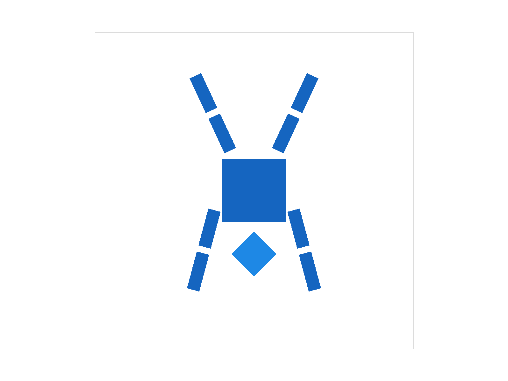
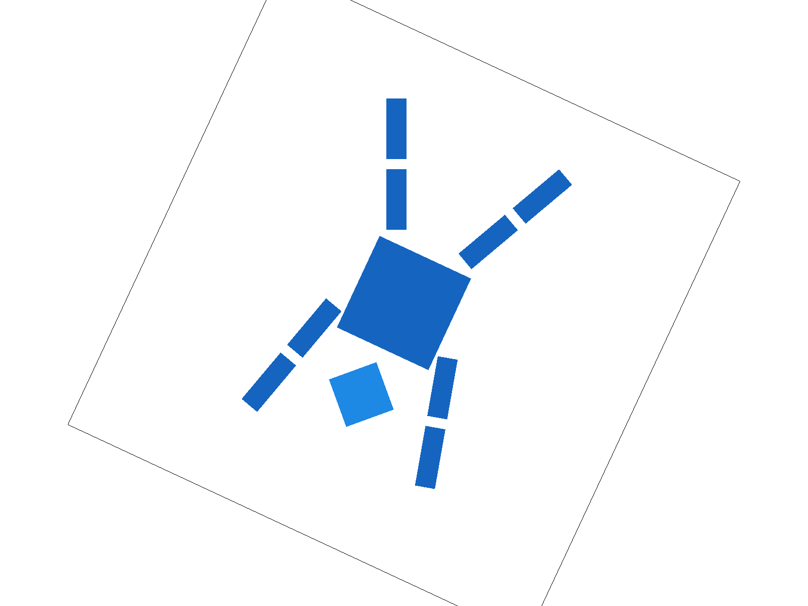

Task 3: Transforms
Transform Matrices
To support the SVG transformation, I implemented the three standard 3x3 matrices for 2D affine transformations in homogeneous coordinates:
-
Translate \((dx, dy)\): Moves a point \((x, y)\) to \((x+dx, y+dy)\)
\[ T(dx, dy) = \begin{bmatrix} 1 & 0 & dx \\ 0 & 1 & dy \\ 0 & 0 & 1 \end{bmatrix} \] -
Scale \((sx, sy)\): Scales the geometry by \(sx\) in the \(x\)-axis and \(sy\) in the \(y\)-axis
\[ S(sx, sy) = \begin{bmatrix} sx & 0 & 0 \\ 0 & sy & 0 \\ 0 & 0 & 1 \end{bmatrix} \] -
Rotate \((\theta)\): Rotates a point counter-clockwise by \(\theta\) degrees around the origin
\[ R(\theta) = \begin{bmatrix} \cos\theta & -\sin\theta & 0 \\ \sin\theta & \cos\theta & 0 \\ 0 & 0 & 1 \end{bmatrix} \]
My Robot: Handstand Cubeman
For my_robot.svg, I decided to create a robot performing a handstand. Also, I changed the color to a blue theme.
To achieve this pose, I applied the following transformations relative to the torso (which is centered at 250, 250):
- Head: Translated down \((0, 100)\), scaled by \(0.5\), and rotated \(45^\circ\).
- Legs: Translated upwards \((\pm 50,-90)\) and rotated outwards (\(\pm 25^\circ\)).
- Arms: Translated downwards \((\pm 70,60)\) and rotated slightly outwards (\(\mp 15^\circ\)).
Below is the rendered result:

Extra Credit: Viewport Rotation
I implemented an interactive Viewport Rotation feature. This allows the user to rotate the entire rendering canvas around the center of the screen using the keyboard. Key 'J' rotates the viewport +5 degrees counter-clockwise, and key 'F' rotates the viewport -5 degrees.
Coordinate Pipeline
The full coordinate transformation pipeline in the renderer is defined as:
My modification specifically targets the \(\mathbf{M}_{ndc\_to\_screen}\) matrix. Originally, this matrix only handled scaling and centering to fit the normalized device coordinates (NDC) into the window resolution.
Matrix Construction
To implement rotation, I added a function DrawRend::update_ndc_to_screen() to modify the ndc_to_screen matrix. First, I defined the base scaling matrix (\(M_{base}\)) as follows, where \(S = \min(W, H)\) is the scaling factor:
I then constructed the final ndc_to_screen matrix by wrapping this base matrix with translation and rotation operations relative to the screen center \((cx, cy)\):
Where \((cx, cy)\) is the center of the screen \((\text{width}/2, \text{height}/2)\) and \(\alpha\) is the current view angle.
- \(M_{base}\): Maps NDC to the default screen position.
- \(T(-cx, -cy)\): Moves the screen center to the origin \((0,0)\).
- \(R(\alpha)\): Rotates the view by \(\alpha\) degrees.
- \(T(cx, cy)\): Moves the origin back to the screen center.
This ensures the image rotates around the center of the window rather than the top-left corner. Below is the robot with the viewport rotated:
